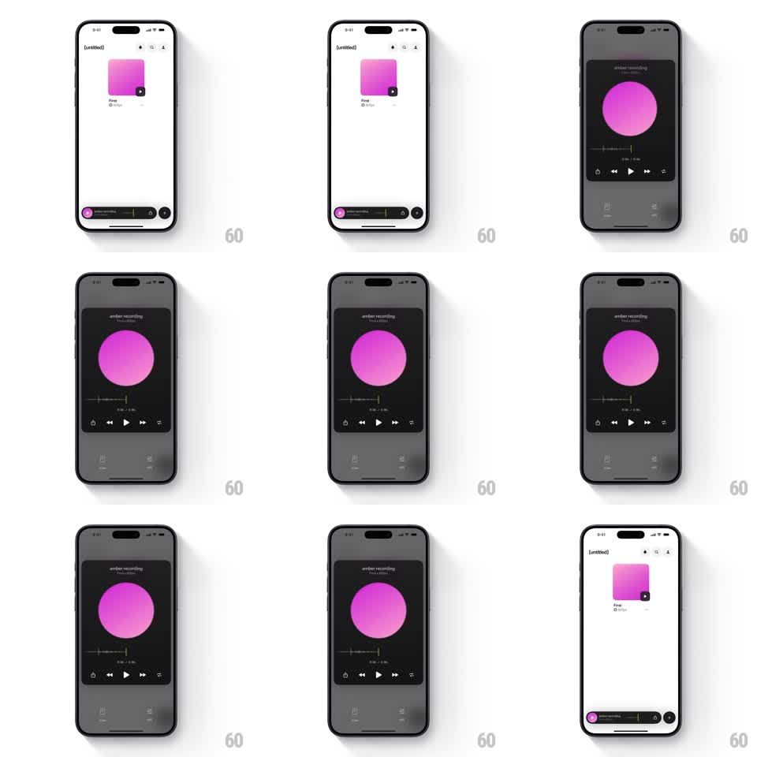

Media
Frame-by-frame

Rebuild this animation 1:1: a mini player bar that springs open into a full-screen dark audio player - the bar's circular artwork grows into a giant disc, the waveform expands, and controls fade in; collapsing reverses the whole morph.

Rebuild this animation 1:1: a mini player bar that springs open into a full-screen dark audio player - the bar's circular artwork grows into a giant disc, the waveform expands, and controls fade in; collapsing reverses the whole morph. ## Integration Integration: stack-agnostic spec - springs given as stiffness/damping, timed motions as duration + curve; map every value to your framework and animation library of choice. ## Scene Light library screen with a rounded-square pink artwork, title "First", subtitle "60fps". Mini player bar docked above the home indicator: pink circular artwork, "amber recording / First - 60fps", progress ticks, share and plus buttons. Expanded player: dark full-screen card with "amber recording / First - 60fps" header, a large pink disc, a waveform scrubber with time labels, and transport controls (skip back, play, skip forward, share, more). ## Motion spec Pattern: shared-element expansion morph with spring. - Tap mini bar: the bar expands upward into the dark player (spring ~320/28, ~350ms) while the background dims (200ms). - Artwork: the mini bar's pink circle is the same element as the big disc - it translates to center and scales ~5x through the same spring, no crossfade. - Waveform + timestamps grow out of the bar's tiny progress row (~250ms, slight stagger after the disc). - Transport controls fade + rise ~12px in a 40ms bottom-up stagger, trailing the disc by ~100ms. - Collapse: reverse the same morph; the disc shrinks back into the bar's circle exactly. ## Calibration - One spring drives container, disc, and waveform so the morph reads as a single motion. - Pink is the only accent in both states - no color crossfade. ## Reduced motion Player fades in over a dim (200ms); no shared-element travel. ## Don't miss - The disc never jumps: scale and position interpolate from the bar slot to the hero slot. - The mini bar's share/plus icons become the player's footer actions, not duplicated elements.